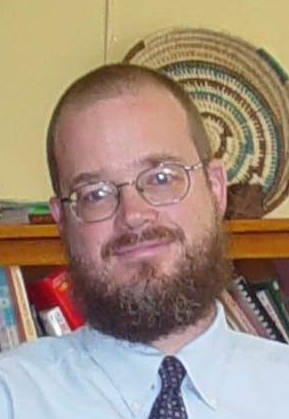

Friends Theological CollegeReturn to Home Page |
|  | Friends Church (Quaker), member of West Richmond Friends Meeting (Indiana Yearly Meeting). Patrick Nugent was born in Chicago, Illinois, and was raised in Clemmons, North Carolina, and Washington, D.C. in USA. He is married to Mary Kay Rehard, and they have two daughters. Patrick graduated from Gonzaga College High School (Washington, D.C.) in 1983. He completed his undergraduate studies at Xavier University (Cincinnati, Ohio), earning the H.A.B. in Classics and History, graduating summa cum laude in 1987. Patrick completed his graduate studies at the University of Chicago, earning the M.Div. in 1990, and the Ph.D. in History of Christianity in 1999. His doctoral dissertation is entitled, “Ritual Illness and Ritual Healing: Medieval Miracle Stories in the Eleventh Century.” Church history, medieval miracle stories, Quakerism and Islam are among his academic and research interests. He has published several articles in History of Religions, Friends Journal, Journal of the Radical Reformation, Quaker Life, and Quaker Theology. His teaching specialties are New Testament, Quaker Theology and History, and Church History. |
Questions, comments, suggestions about this web page: Susan Jeffers, susan@read-the-bible.org.